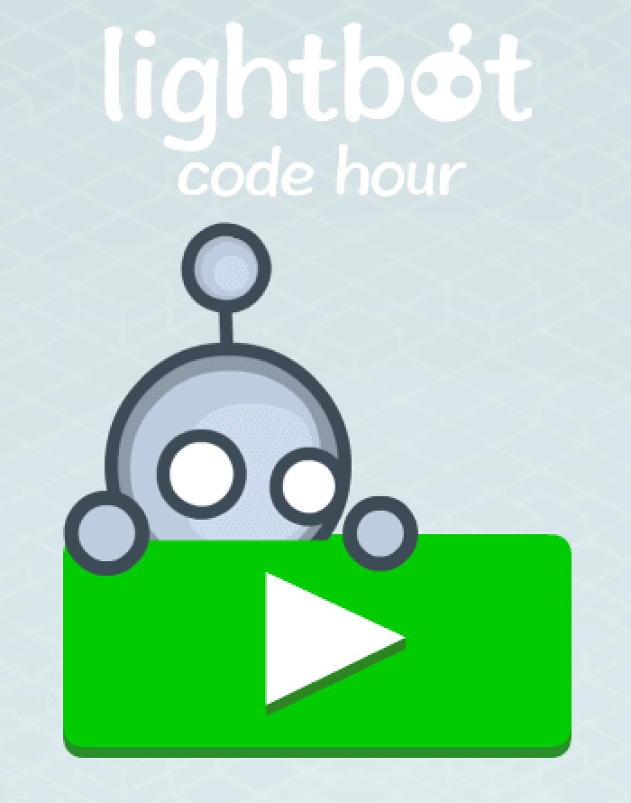
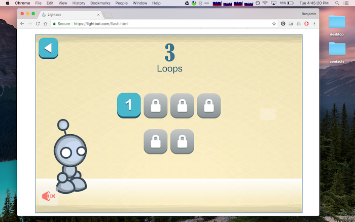

We are going to warm-up our programming/computer-science skills by playing games that help to reinforce programming concepts! LightBot is a level-based game that requires the player to use concepts from computer programming to “beat” each level. As the game progresses, the levels get harder (and thus, more computational thinking is required).

Follow this link to get to LightBot.
Each section of lightbot has landing-page that shows what level(s) you have unlocked. For example, below is a screenshot of what levels have been unlocked for the “loops” section:

Also, after beating the last level in each section, the application will show a screen that says “Congratulations, you have completed X”. For each section, you must submit a screenshot of all of the unlocked levels, and a screenshot of the “Congratulations” page.
If you’ve never taken a screenshot in your computer before, here’s how you do it on Mac and here’s how you do it on Windows. There are plenty of other instructions online if the above links don’t work. Just Google.
When you take your screenshot, don’t just include the lightbot window. Instead, include your entire screen , so that I can see the utility bar at the top or bottom of your screen with the current date, time, etc. (feel free to close personal windows, files, etc). This is to help ensure that you aren’t sharing screenshots amongst yourselves (which would be cheating).
Complete the Basics section of lightbot.
Name the screenshots netid-lb-basic-levels.XXX and netid-lb-basic-congrats.XXX, where netid it your actual netid and XXX is some type of common image format (png, jpg, etc).
Complete the Procedures section of lightbot.
Name the screenshots netid-lb-procedures-levels.XXX and netid-lb-procedures-congrats.XXX, where netid it your actual netid and XXX is some type of common image format (png, jpg, etc).
Complete the Loops section of lightbot.
Name the screenshots netid-lb-loops-levels.XXX and netid-lb-loops-congrats.XXX, where netid it your actual netid and XXX is some type of common image format (png, jpg, etc).
After completing all of the sections, read through this page from the LightBot website: https://lightbot.com/hoclearn.html
Write a 100-200 word essay/summary of your experience with lightbot. Your summary should answer questions like:
Put your essay into a text file named netid-lb-essay.txt, where netid is your actual netid.
This was assigned on 8/21/2017. It is due on 8/25/2017 at 5:00pm.
Turn in each of the files described in the spec (7 total) the the assignment 1 dropbox in D2L before the due date. Make sure to name the files exactly as this document specifies. In general, make sure to follow these instructions precicely. If you don’t, we will deduct points!!!